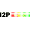

Plataformas / BSD /
Red de anonimato
Recomendaciones Libres


I2P
I2P es una red de capa anónima - una red dentro de una red. Está pensada para proteger la comunicación del seguimiento de las redes de vigil…

Tor
The Onion Router, en su forma abreviada Tor, es un proyecto cuyo objetivo principal es el desarrollo de una red de comunicaciones distribuid…
Privativo*